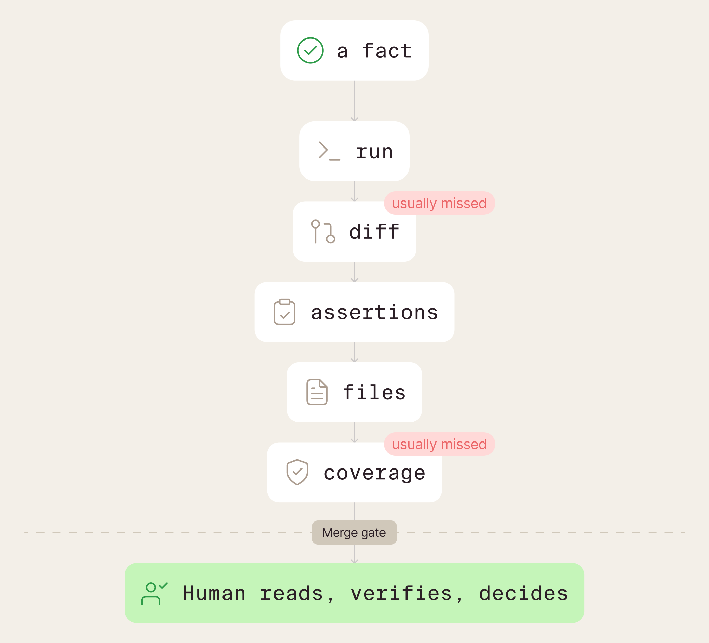
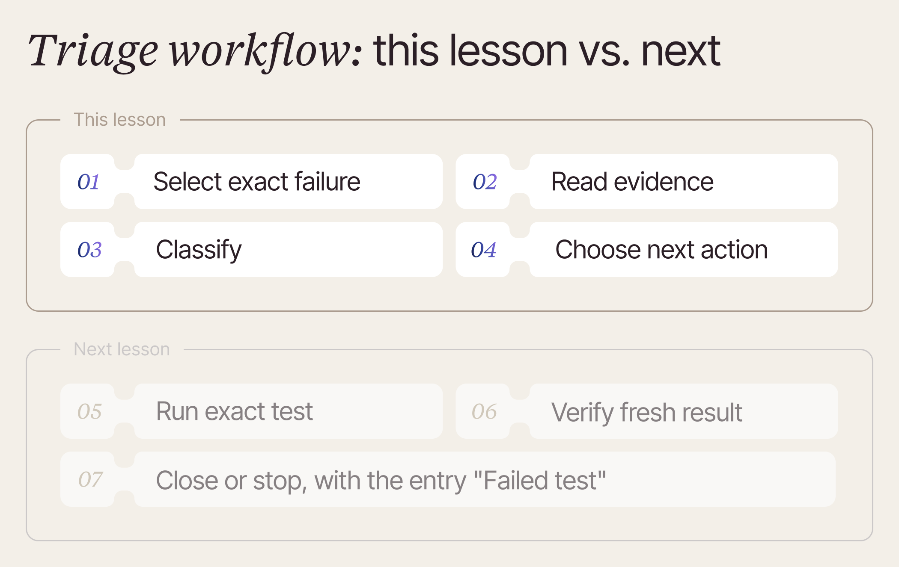
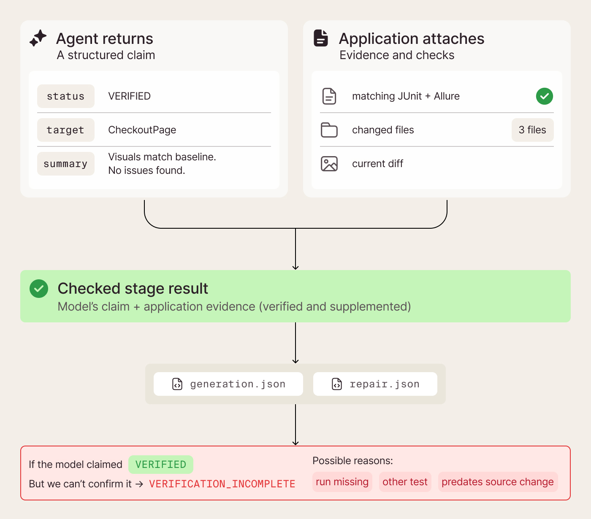

A six-week course that moves mobile QA engineers from one-off prompts to verified, human-gated AI workflows. Built for a mobile-first ride-hailing company, on a sandbox repository that mirrors its production stack.
My role: Lead Learning Experience Designer. I owned the learning design end to end, from stakeholder discovery to live workshop delivery.
The client already had AI tools; engineers used them unverified, and the cost landed on code reviewers. I rebuilt the course around one real repository, specified a new emulator-based grader, and ran three scenario-based workshops. 224 engineers enrolled. Of those who started, about half reached the final module. Most drop-off happened at setup, which I would fix first. The course is now the base for three more client tracks, 66 engineers so far.
Three interviews with the client's QA and automation leads reframed the request. Engineers already had coding assistants. They used them at the level of "write me a test", merged the output unverified, and the cost landed on code reviewers.
Generated tests were full of errors. Peer review absorbed the whole load.
Two or three advanced builders. Everyone else reused ready-made prompts.
Used outside the CI pipeline and the review flow.
Whole logs pasted into a model, with no sense of context size or token cost.
| Decision | Topic | Reason from the interviews |
|---|---|---|
| Cut | Web UI testing, visual regression | The product is mobile-first. The internal platform already covers visual checks. |
| Cut | Self-healing tests | Risk of false positives that hide real bugs. |
| Added | Agent context, AI usage policy, human gates | Output quality depends on what the agent knows and what it may change. |
| Added | Pre-review AI check in CI, failure triage, multi-agent test writing | Confirmed as priority scenarios in all three interviews. |
| Mirrored | Kotlin, Appium, GitHub Actions | Practice runs on the same stack the engineers use at work. |
The first syllabus opened with a week of policies and metrics and no code. After discovery I rebuilt it around one repository that learners work in from the first module to the capstone.
Each module has one skill and one project. Each project consumes what the previous one produced, so the capstone is an assembly of work the learner already trusts.
27 of the 40 final lessons were written from scratch. I mapped every existing lesson to one of three states: reuse, adapt, or write from scratch.
Set up an agent against a real repo and define the rules that make AI use provable.
AGENTS.md · agent_docs/ · AI_POLICY.md · baseline_report.md
Plan, generate, verify and review tests. Automate AI review in CI.
automation_plan.md · verification_notes.md · review_template.md · PR review workflow
Turn raw CI logs into cause clusters and a standard root-cause one-pager.
triage workflow · RCA template · guarded repair loop
Assemble a human-gated flow from test case to pull request and defend it.
workflow graph · batch policy · capstone
Module 2 asks learners to generate and repair mobile UI tests. A green run on a learner's laptop proves little, and the platform could not run Kotlin or Appium. I specified a new check format with the SME and the platform team.
The learner's test is judged against the app's actual screens in a reference environment. Feedback names the assertion that failed, so the learner can fix and resubmit without waiting for a person.
| Task | Check | Why this format |
|---|---|---|
| Classify AI actions as allowed, risky or forbidden | Quiz with feedback | One right answer. Fast repetition builds the vocabulary. |
| Agent context docs, AI policy, automation plan | AI checker against a rubric | A document has no single right answer but has required parts. |
| Automation plan before generation | Blocking AI checker | A weak plan produces a weak test. The gate stops the error early. |
| Generate a mobile test, migrate locators after a redesign | Emulator grader | Only a real run shows that the test exercises the screen. |
| API tests, guarded repair loop | Automated tests on the repository | Deterministic result, feedback in minutes, scales to 200+ learners. |
| Capstone | Automated checks plus a human review checklist | Reasoning and the merge decision need a person. |
I also wrote a guide for experts: what to prepare for each format (starter repo, README, reference solution, review criteria) and when one cumulative repository beats a repository per task.
Each workshop puts the skills of two modules under time pressure, in a scenario taken from the client's daily flow, with engineered data and a known ground truth.
A departed colleague merged a batch of AI-generated tests without review. All green. Teams audit them and patch the policy that let them through.
Output: a verdict per test with a line of proof, and one new policy rule.
47 of 65 tests failed overnight. Teams get the same logs, commits and re-run, and must find the real cause clusters before stand-up.
Output: a cluster map with evidence, and a root-cause one-pager.
The client's own engineer shows the multi-agent pipeline he built. Learners rebuild its first stage on real diffs, including one that should produce nothing.
Output: a working analysis stage for a test-generation pipeline.
Every defect is planted on purpose and has an answer key with the deciding evidence.
One test has no defect. Teams holding a defect list tend to find one anyway. The debrief names that bias.
Two or three rules, said aloud: name the artefact before opening it; no verdict without a quoted line.
The guide gives a question per case to unblock a team without confirming the answer.
I drafted two variants. In variant A, teams derive the defect classes themselves at the end. In variant B, they receive the classes up front and practise recognising them.
I chose B after the dry run. It keeps timing predictable and works for mixed groups of manual and automation QA. The cost is that teams stretch classes onto healthy code, which is why the trap case exists.
Second workshop, different dramaturgy: every team gets identical data. The learning moment is comparing cluster maps that disagree.
For every visual I wrote a brief: what the picture contains, what the learner must take from it, and which exact labels to use. The designer drew the final graphic.
What moved: the corridor turned vertical to fit a phone screen, the barrier became a dashed merge gate, and the highlight became a "usually missed" tag. The order, the labels and the human at the gate stayed as briefed.

What moved: the chain became two numbered groups, which reads better on a narrow screen. "Next lesson" replaced the lesson number, so the graphic survives renumbering.

What moved: almost nothing. When the brief names every block, label and arrow, the designer spends the time on hierarchy and colour, not on decoding the lesson.

Briefs were written in Russian for the design team and are translated and shortened here.
Snapshot of 13 November 2026. 224 engineers enrolled; the cohort runs to 1 March 2027, so completion is not final.
| Workshop | Satisfaction | Applicability | Facilitation |
|---|---|---|---|
| The Nightly Run Is Red | 5.0 | 5.0 | 5.0 |
| Cold Case | 4.0 | 4.5 | 5.0 |
Four responses per session. Difficulty rated "just right" in both. A small sample, but unanimous.
Repairing one failing test in a guarded loop instead of fixing everything red at once. Writing coordination down as a skill and a graph instead of doing it by hand.
The course became the base for three custom QA tracks at two other companies, 66 engineers, launched in November 2026. One keeps the module structure with a different protocol and client language.
The distribution has two peaks: module 2 and the final module. Retention is fine; the losses are at activation. I would move setup into a live onboarding session in week 1 and ship a ready-made environment as fallback.
I set up a review protocol: go lesson by lesson on the platform, run every practice task, mark each lesson as fine, unclear or broken, attach evidence. The reviewer had about 15 years in QA and test architecture.
| Finding | What it meant for the design |
|---|---|
| Setup is a cliff. The longest lesson of the course has no fallback, and Windows steps are missing. | The first real barrier sits before any learning happens. |
| Lesson text out of sync with the repository in two reproducible places. | A course about verifying artefacts must verify its own. |
| Supporting files live in other repositories, referenced by name only. | Learners lose time on logistics that is not course content. |
| Rules are explained well but not enforced. The AI review posts a comment that blocks nothing. | The practice should show a gate that stops a merge. |
| The AI checker gives a verdict with no visible rubric and a hard attempt limit. | The grader should meet the evidence standard the course teaches. |
Lesson pipeline: I wrote the brief → the SME added sources and technical references → I wrote the lesson → SME review → editor → platform.
Team: product manager, delivery manager, two QA automation experts, editor, graphic designer, platform engineers, learner support.
| When | Stage | My output |
|---|---|---|
| Feb–Mar | Discovery | Interview synthesis, problem statement, cut and add list |
| Mar–Jun | Design | Content mapping, detailed syllabus, outcomes per module, briefs for experts, assignment format guide, grader specification |
| Jul–Aug | Modules 1–2 | Lesson texts, platform review, handover document for cover during leave |
| Late Aug | Launch | First cohort starts on modules 1–2 |
| Sep | Modules 3–4, workshops 1–2 | Lesson texts, workshop scenarios, facilitator guides, dry runs, external review |
| Oct | Workshop 3 | Session co-designed with the client's AI champion and rehearsed with the support team |
| Nov | Adaptation | Custom tracks for two more clients |